ZhiTree Books · a personal digital library
User Guide
A web bookshelf for notes, books, PDFs and small tools. This guide explains how to use it with pictures and steps; to set up your own copy, switch to “Install & deploy”.
- What it is
- The home page
- Reading
- Card buttons
- Your own files
- Follow other blogs
- On a phone
- Public directory
- Follow this site
- FAQ
The interface speaks English: use the 中文 | EN switch at the bottom left of the page. The books and notes on this particular site are mostly in Chinese, and the All / 中 / EN filter next to the search box narrows the cards to one language. The screenshots below show an English demo library with made-up content.
0What it is
ZhiTree Books is a personal digital library: the site owner puts notes, books, PDFs and small web tools into a folder, and they become cards on a web page. No sign-up, no login: open it and read. You can do three things:
Read
Click a card to read it right in the page: HTML, Markdown, TXT and PDF all work. It remembers where you stopped, lets you bookmark places and change the reading colour.
Keep
Bring in your own files, many at a time, and sort them into “collections”. They stay in your own browser: nothing is uploaded and nobody else sees them.
Browse & submit
The “public directory” gathers many people’s blogs, articles and reading lists in one place; you can also send your own address or article in, without an account.
1The home page
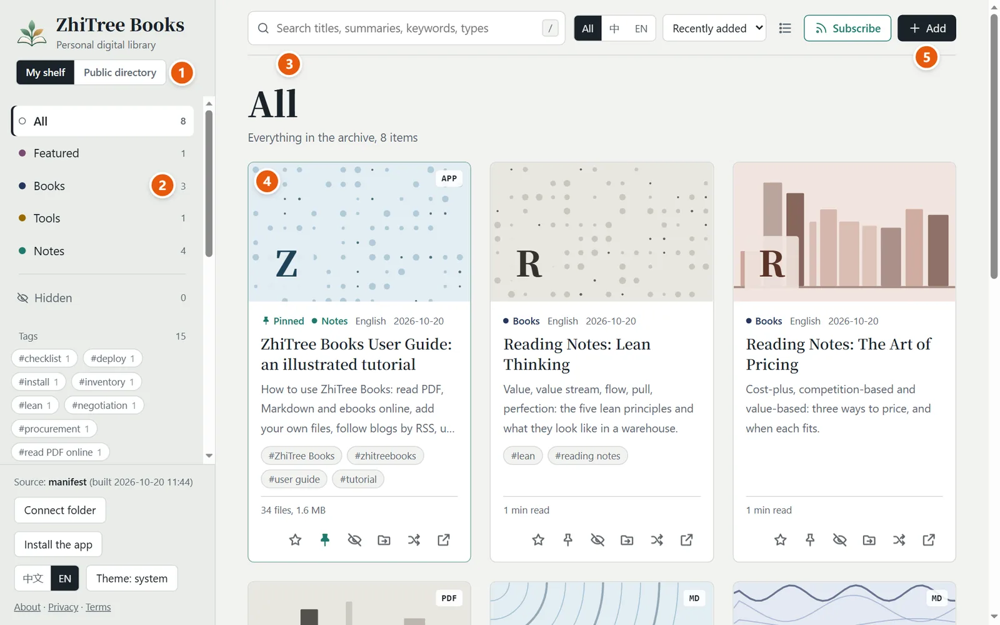
- My shelf / Public directory: two spaces, one click to switch. “My shelf” is the site’s own books plus the files you add; the “Public directory” is covered in section 6.
- Categories and tags: click a category to see only that kind, click a tag to filter by topic. The “Card index” below lists the titles in each category; click one to jump to its card.
- Search: titles, summaries and keywords together. Press / to jump straight to the search box.
- Cards: cover, title, summary, reading time. Click one to start reading. The small tag at the top right is the file type (MD / PDF / TXT / APP…); “APP” is a small web tool.
- Add: bring in your own files, see section 4.
To the right of the search box you also find: All / 中 / EN (show one language of content only), sort (recently added / publication date / recently read / title; the public directory is newest first), the list / card view and Subscribe. At the bottom left you can switch the interface language (中文 / EN) and the theme (system / light / dark).
2Reading
Click any card to open the reader. Every format shares the same row of buttons:
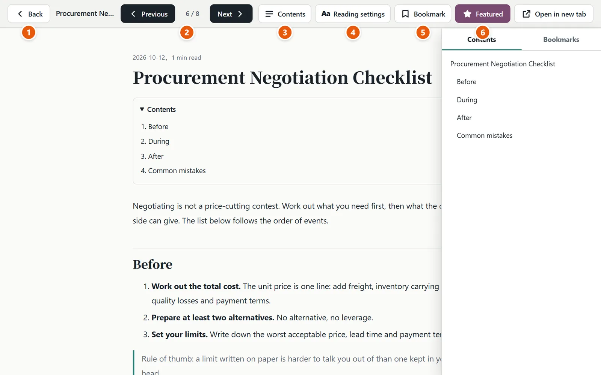
- Back: return to the shelf (or press Esc).
- Previous / Next: page through the current list in order (or press ← →).
- Contents: takes the headings from the text; click one to jump there, and it marks where you are. The “Bookmarks” tab sits beside it.
- Reading settings (Aa): change the colour and the text size, see the next picture.
- Bookmark: remembers the place you are at now; click it in “Bookmarks” later to come back.
- Featured / Open in new tab: mark the whole piece as a favourite, or open just this page in a tab of its own.
While you scroll, your progress is saved automatically and you come back to the same place next time; “Continue reading” at the top of the home page lists the pieces you left half-read.
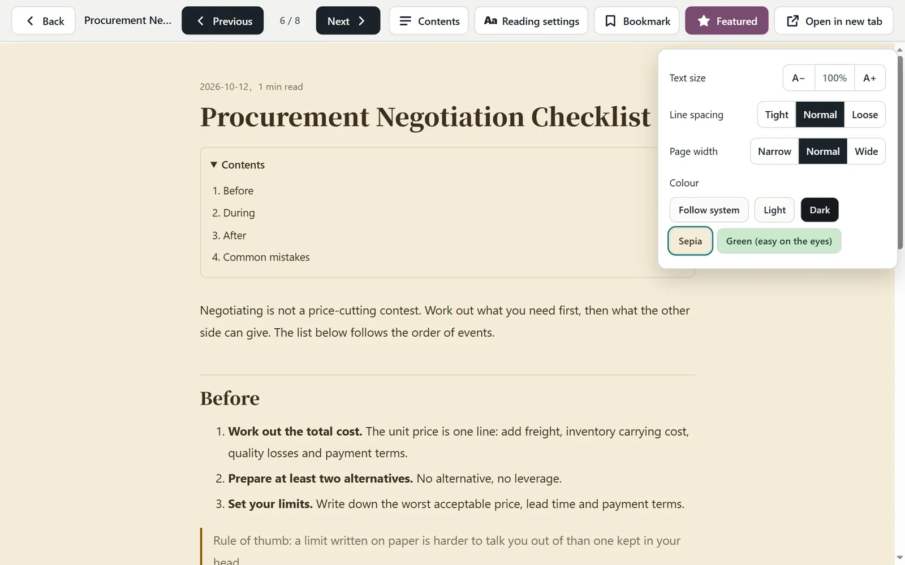
| Format | How it is shown | Size / spacing / width | Contents and bookmarks |
|---|---|---|---|
| Markdown, TXT | One consistent reading layout | All adjustable | Yes; in TXT, lines like “Chapter 4” are treated as chapters |
| HTML | Kept as the original page | Colour only | Yes, for pages with proper headings |
| The browser’s own PDF viewer | Colour only | No (a phone shows “Open / Download”) |
What changes here is the colour tone (sepia, green, dark); a web page cannot truly filter blue light.
3Card buttons
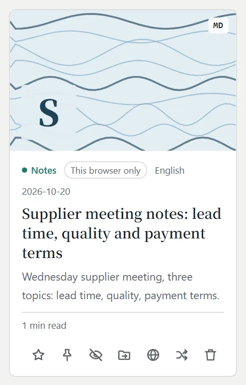
| Mark as featured: puts it in the “Featured” category, handy for your few favourites. | |
| Pin to top: whatever the sort order and whichever category you are in, it stays first and carries a “Pinned” mark. With several pinned, the last one pinned comes first. A pin you click on the web page counts for you only; other visitors are not affected. | |
| Hide: takes it out of the categories and search without deleting the file. “Hidden” at the bottom of the left column brings it back. | |
| Move to another category: file it elsewhere; your own files can also go into another collection. | |
| Publish to the public directory: sends this item to be reviewed, see section 6. It appears only when the site has a public directory. | |
| Shuffle cover: the cover is generated from the title; shuffle it if you do not like it. | |
| Open in new tab: leave the reader and open this page on its own. | |
| Delete: only your own files have this button (those added in the browser, or those in a folder on your computer that you connected). It asks first, and a deleted file cannot be brought back. |
The site’s books were put there by the owner, and only the owner can delete one on their own computer and publish again; a visitor cannot do it from the page, and there is no request they could send to do it. What you can do on the page is “Hide”, which takes effect only in your own browser. Stars, pins and moving to another category work the same way.
4Your own files
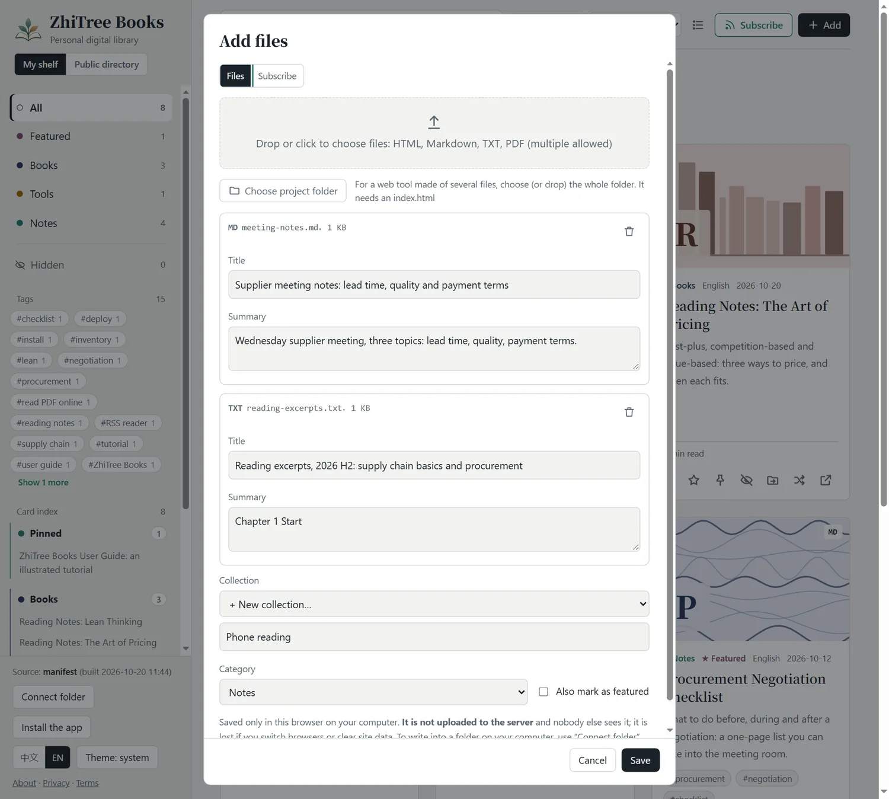
- Click Add at the top right (or just drag files onto the page).
- Click the dashed box to choose files; you can choose many at once. HTML, Markdown, TXT and PDF are supported, up to 30 MB each.
- Each file can get its own title and summary; pick a collection and a category.
- Click Save. The page switches to that collection by itself.
In this browser. They are not uploaded to any server and nobody else sees them. So if you switch browser or device, or clear the site’s data, they are gone, and your phone and your computer are not in sync. To keep files on your own computer for the long term, use “Connect folder” at the bottom left (Chrome / Edge): choose a folder, the files inside show up directly, and what you add is written into that folder.
Back up and restore: moving devices, not losing things
Your files, collections, subscriptions, reading places and bookmarks live only in this browser, so make a backup before you switch device or clear the site’s data. Click Back up & restore at the bottom left:
- Export a full backup: one .zip with every file you added and all your settings.
- Export the list and settings only: a tiny .json without file contents, a way to take your saved links, subscriptions, collections and reading places to another device first.
- Restore: choose a backup file; the page first tells you what is in it and what is already here, and only “Merge into my shelf” imports it. It only merges; nothing you have now is deleted, and files with the same content are not added twice.
The backup file is made by your browser and saved on your own device; it never passes through a server. The site’s own books and the files of a folder you connected are not in it. The “What is this?” note shown on the first visit can be brought back with “What is this?” at the bottom left.
Sync (optional): one shelf on several devices
When the site has a sync service, there is a Sync button at the bottom left (if not, the site has none). It is optional: everything works without it; no sign-up, no password.
- On the first device click Sync → Turn sync on and make a sync code and save the code at once (a password manager is a good place).
- On another device click Sync, type the code under “Already turned sync on on another device?” and click Connect.
- After that, changes sync by themselves a few seconds later, and once more when you come back to the page; “Sync now” works any time.
- What syncs: your list, saved links, subscriptions, collections, reading places, bookmarks, stars and pins; small text files (Markdown, TXT, HTML, up to about 1 MB each) with their content, fetched on another device when opened (the latest few ahead of time).
- What does not: large files such as PDFs sync only as a list entry (the card says “List only”) and their content does not go over; to take them to another device use “Back up & restore” on the original. The articles of a subscription do not sync: each device reads them from the feed.
- How private: the encryption happens in your browser; the sync service sees only scrambled data and can read no title and no text; the code is kept only as a hash. The sync code is the key: lose it and nothing can bring it back; whoever has it can read your shelf.
- Limits: the free space is about 9 MB; when it is full, new files sync only as a list entry; after half a year (180 days) without use the space is cleared. When two devices changed the same thing at once, the later reading place wins, bookmarks are combined, and otherwise the device you are using now wins; a change beats a deletion on the other side.
- Turning it off: “Turn sync off on this device” deletes nothing here; “Delete the cloud data” empties the sync space and leaves what is on every device alone.
After a good while of use the page asks you once: if “large-file sync” (PDFs and more, with more room) were added later, would you pay for it? Your answer goes to the sync service only as an anonymous count, with nothing that could identify you.
Collections: a batch of files kept together
The files of one import can go into one collection. Once a collection is selected, the cards, categories, tags, search and “Continue reading” show only that collection, which keeps the shelf tidy.
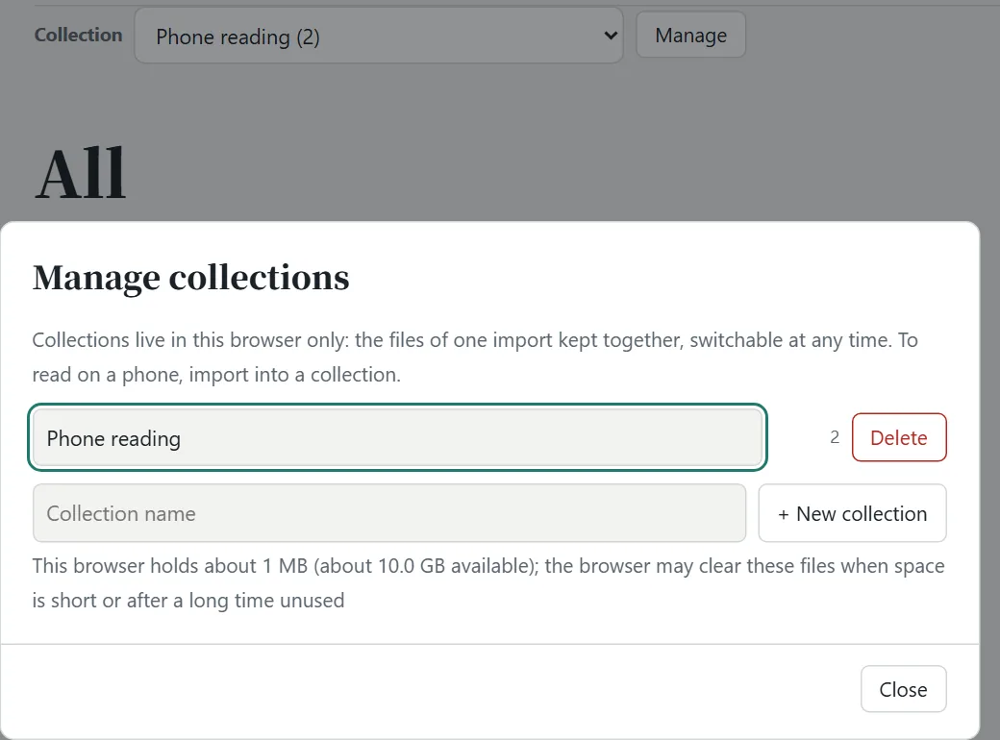
- Switch: on a computer use the “Collection” drop-down above the cards; on a phone tap the index button at the top left, and the collections are at the top of the left list.
- Manage: create, rename, delete. Deleting a collection deletes the files in it; it asks first.
- Change collection: “Move to another category” on a card can put a file into a different collection.
Following: subscribe to other people’s blogs and feeds
For a blog you like to read, you need not visit its site to see whether there is something new: in the “Add” window switch to Subscribe and subscribe to it into your own shelf.
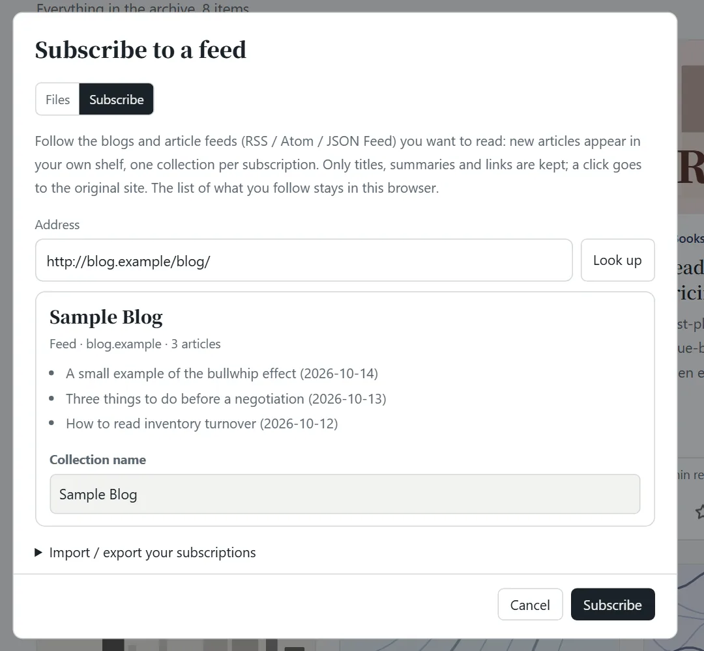
- Click Add and switch to the Subscribe tab. “Try these” under it lists a few sources the site owner picked: one click subscribes, you can subscribe to several in a row and click “Done” to go back to the shelf.
- Paste an address: a blog’s home page or a feed (RSS / Atom / JSON Feed) both work; click Look up. The page tells you what it is called and which articles came last.
- Give the subscription a collection name and click Subscribe.
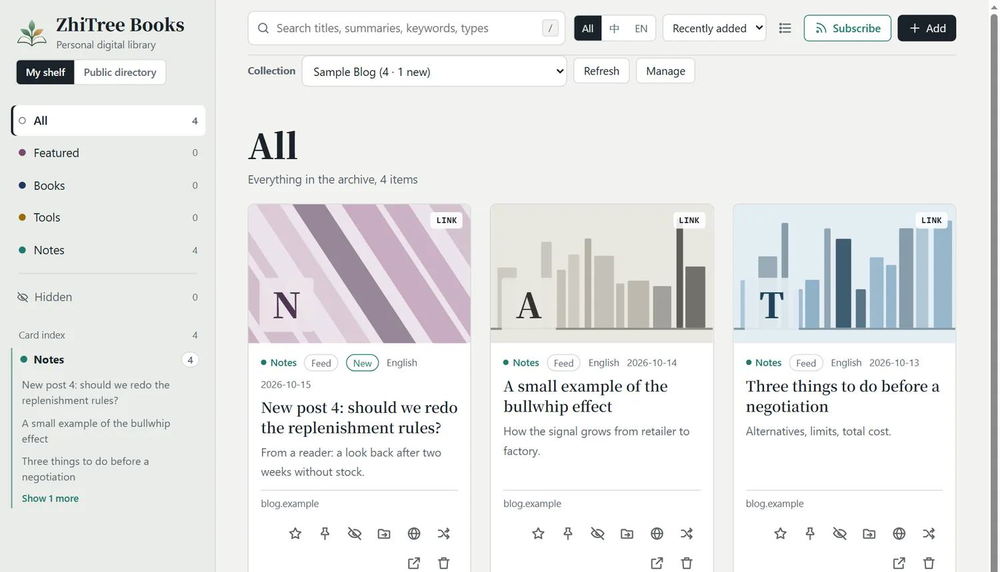
- Articles are read here, not on another site: when a feed carries the full text, the text of the latest articles is kept (the card says “Full text”). When a feed carries only excerpts, the “update service” reads the original page when you open it, extracts the article and shows it in the reader (some pages take ten seconds or more); the text is kept in your browser, so next time it opens at once, and the newest few are read ahead while the page is idle. “Read the original” is in the top bar and at the end. Like a link you saved, it can be searched, starred, pinned and hidden. In the reading settings you can also download the article as a web page (HTML) or print / save it as PDF.
- Pages that cannot be read: pages behind a login or a paywall, with a bot check, drawn by scripts only, PDFs, and pages whose robots.txt keeps programs out cannot be read here. The reader says why and offers an “Open the original” button; the card is marked “Original only”, and later a click opens the original in a new tab at once (it is tried again after a week).
- When it updates: when you open the page (if the last update is over 3 hours old), and any time you click “Refresh”. A web page cannot update in the background, so nothing is pushed to you; with no network you see what was stored last time. Each subscription keeps its latest 60 articles (those you starred or pinned are never cleared).
- If you paste a single article (not a blog): it has no feed to follow, so it is saved as one link and is not updated; when it can be read, its text is kept too and read in the reader.
- Manage: in the collection’s “Manage” you can refresh, “Mark all read” and unsubscribe (the stored articles are removed with it). An article you delete does not come back at the next update.
- Another device: in “Manage” (or “Import / export your subscriptions” in the Add window) export an OPML file or copy a link to the list, and import it or open the link on the other device. Only the list of subscriptions (a series of addresses) is synced; articles and read marks are kept by each device itself. The OPML file also works with readers such as Feedly.
- Privacy: other people’s sites do not let a web page read them directly, so the site’s “update service” reads them for you: the address you subscribe to is sent to it, it reads the titles and summaries and hands them to your browser, and it stores nothing itself. The list of subscriptions lives only in your browser.
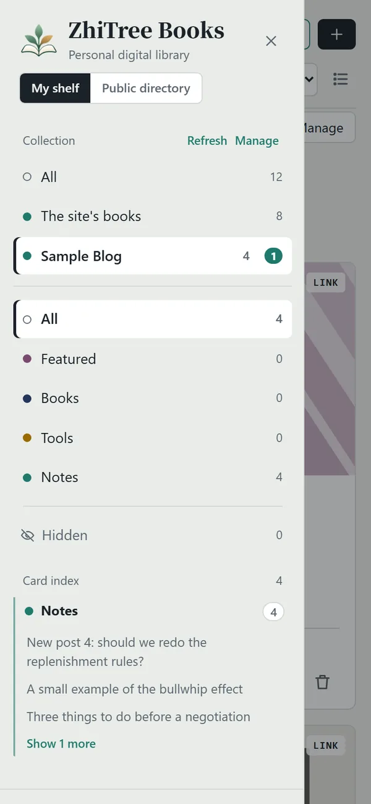
This feature needs the site owner to set up the public directory’s service (see “Install & deploy”). Without it the “Add” window offers files only.
5On a phone
Install it to the home screen and use it like an app
- Android (Chrome): open the site and tap “Install the app” at the bottom of the left column, or “Install app / Add to Home screen” in the browser menu.
- iPhone (Safari): tap the “Share” button at the bottom → “Add to Home Screen”.
Once installed it opens full screen, and the pages and files you have opened (up to 120) are kept, so you can read them again without a network.
If you do not, Safari clears this site’s data after about 7 days without use (reading progress, bookmarks and the files you added are all lost). A site installed to the home screen is not subject to that limit.
Cards and gestures on a phone
- The card view is two columns: a card keeps its cover, title and one line of facts; the buttons besides the star (pin, hide, move, publish, new cover, delete …) are behind the “…” on the card: tap to open, tap elsewhere to close. The list button at the top right switches to one row per item.
- Swipe left or right while reading: left is the next article, right the previous one (in the order of the shelf’s current sort); at the ends it tells you. The top bar has no “Previous / Next” buttons any more; the contents panel keeps a pair for what cannot be swiped, such as a PDF. A code block or table that scrolls sideways does not turn the page by mistake; nor does a swipe with text selected, while zoomed in, or from the very edge of the screen (that is the system’s back gesture).
- Swipe on the shelf: right opens the left list, left closes it (on one row of the list, a swipe to the left shows that row’s buttons instead, see below).
The left index: collections, categories, swipe left to delete
Tap ≡ at the top left (or swipe right on the shelf) to open the left list: collections are at the top, then categories and tags, and the “Card index” at the bottom. Swipe one row of the index to the left and buttons appear underneath:
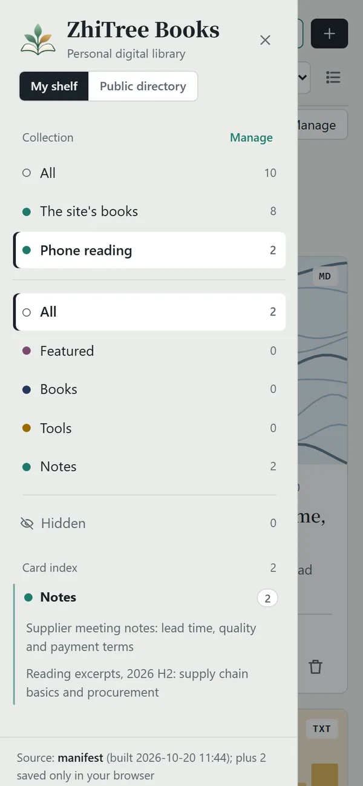
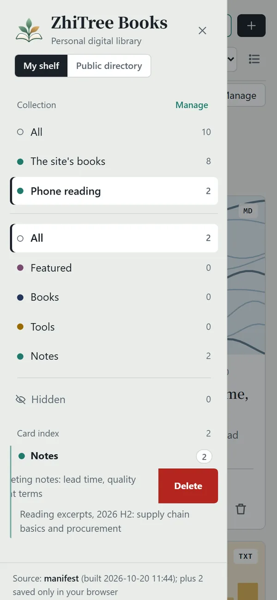
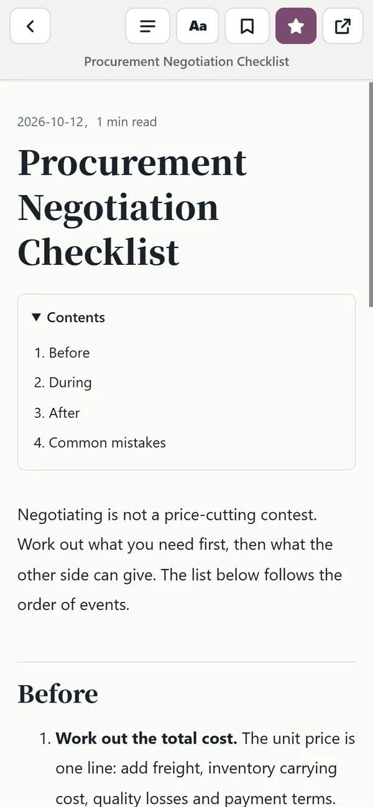
- Red “Delete”: for your own files; it asks first.
- Grey “Hide”: for the site’s books (which you cannot delete); it hides them in your browser only. Inside “Hidden” the button reads “Restore”.
- Swiping vertically still scrolls the list; once a row is open, tap elsewhere to close it again.
“Share to ZhiTree Books” from other apps (Android)
After installing it to the home screen, tap “Share” in a file manager, a chat app or the browser and pick “ZhiTree Books”: a shared PDF / Markdown / TXT / HTML opens the “Add” window, where you choose a collection and save; a shared web address is saved straight away as a “Saved link”. Right after the first install it takes the browser a while to refresh the app’s details (usually within a day; adding the icon again makes it immediate) before it shows in the share list. Safari on iPhone has no such feature: use “Add” and choose several files instead.
6Public directory and submitting
Click “Public directory” on the left to see one list made of many people’s blogs, articles, GitHub repositories and videos. It does not keep anyone’s full text: only the title, summary, the address of a cover image and a link back to the original. Click an article and it is read right in the reader (as in a subscription, the “update service” reads the original; pages that cannot be read, videos and repositories go to the original site); when you save it, the text you read is saved with it.
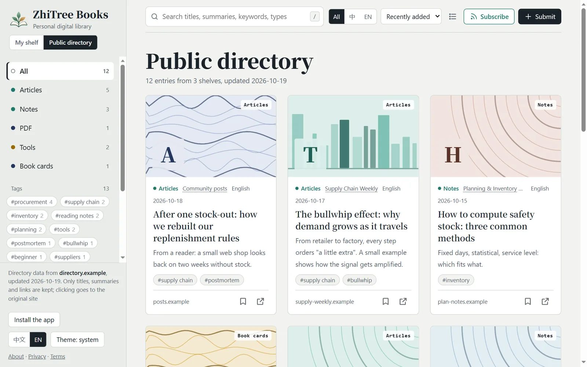
- Save: the bookmark button on a card saves the link to your own shelf (kept in your browser only), marked “Saved link”.
- Subscribe: “Subscribe” inside the public directory follows the whole directory, one type, one tag or one shelf.
- Recommend a blog: paste its address (the blog’s home page or its RSS) in “Submit”. A feed can be submitted too; once the site owner approves it, its new articles enter the directory every day.
Sending your own content in: three ways, none needs an account
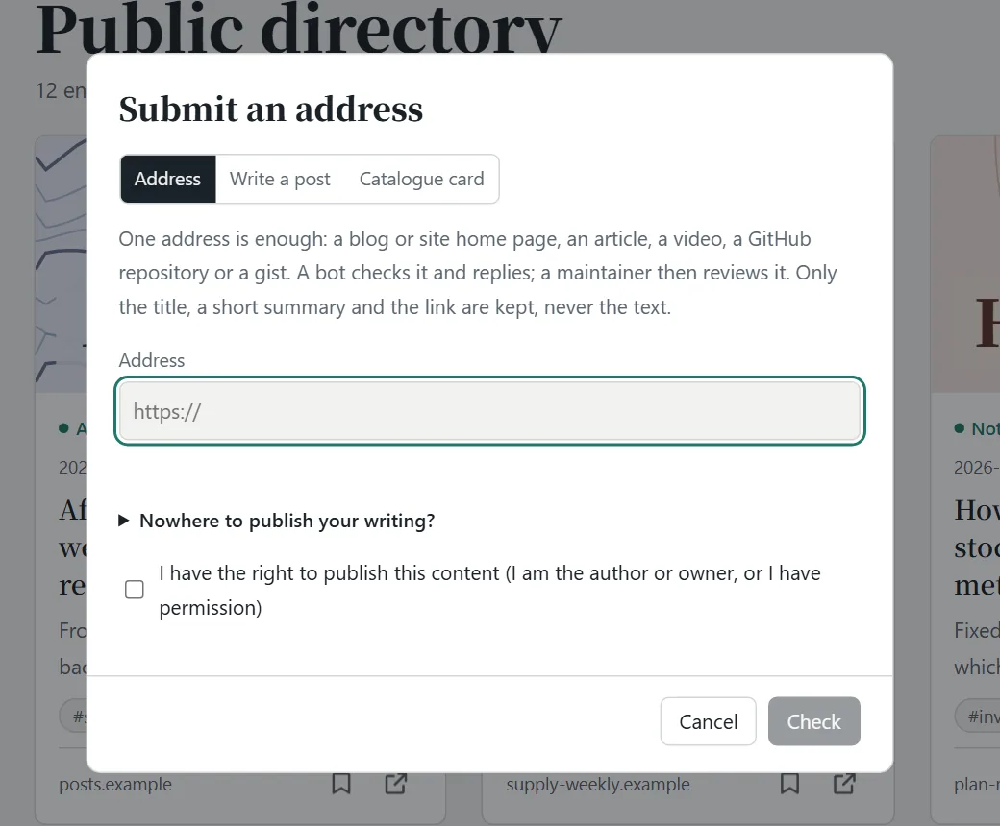
- Paste an address: a blog, an article, a video, a GitHub repository or a PDF will do. Click “Check” first: the page tells you what it is, how many pieces it found and what the latest ones are, and it stops duplicates that “the directory already has”. When it looks right, tick “I have the right to publish this content” and click “Submit”.
- Write a post: switch to “Write a post” in the window, write or paste a Markdown article, and it carries the author name you give. Once approved the directory hosts it as a page (public, pictures not shown), and you can ask for it to be taken down at any time.
- Click the globe icon on a card: every card in “My shelf” has one. If it has an address, that address is sent; for a Markdown / TXT file in your computer or browser, the text is sent; for things with no address, such as books, PDFs and web tools, only a catalogue card (title, author, summary, tags) is made public, never the file.
After you submit, it goes to the owner’s review queue and the card shows “Sent, waiting for review”; once approved it appears in the public directory. Different spellings of an address (http / https, www, a trailing slash, tracking parameters) count as the same one; things whose title, author and summary are nearly the same are also stopped, and you are told which one they look like.
An address like …/#read/local%3A… is the reading address inside your own browser; nobody else can open it. Use the real address when you submit, or click the globe icon on the card.
7Following this site (RSS)
This section is the other way round: following this website in your own RSS reader. (To follow other people’s writing, see section 4.) Click the green “Subscribe” button in the top bar: it has one-click “Subscribe in Feedly / Inoreader” links and a copy button. You can follow just a part: everything, one category or one tag, with the one you are looking at preselected. Once you follow it, your RSS reader (Feedly, Inoreader and so on) lets you know when there is something new.
8FAQ
Where did the files I added go? Why can’t my phone see what I added on my computer?
They are kept in the browser you used when adding them; different devices and different browsers are not in sync. To read on your phone, import there (you can choose several and put them into one collection), or use “Share to ZhiTree Books”. To take things from your computer along, export a backup there with “Back up & restore” and restore it on the phone.
I pinned / hid / moved something. Why can’t anyone else see it?
Doing these on the website is saved only in your own browser: it is your own way of organising and does not change the site. To show them to everybody, only the site owner can change them on their own computer and publish again.
I want to delete a book that belongs to the site. What do I do?
Visitors cannot delete. You can “Hide” it (for you only). If you are the site owner, delete it from library/ on your computer and deploy again.
I subscribed to a blog but no new articles appear, or it says “Update failed”.
First click “Refresh” in the collection’s “Manage” and read the reason on that line. Common causes: the other site is down for now, the other site does not allow programs to read it, or the address is not actually a feed. A web page cannot update by itself in the background; it reads only when you open the page, and if the other side published nothing new, there is nothing new.
Why does a PDF have no contents or bookmarks?
A PDF is shown by the browser’s own viewer, and the page cannot read its structure (a scanned one has no text at all). HTML, Markdown and TXT have contents and bookmarks.
Is my data safe?
Your files, reading progress, bookmarks and collections are kept only in your own browser and are not sent to a server. The site itself has no accounts. For details see the privacy policy.
Which keyboard shortcuts are there?
/ focuses the search; Esc closes the reader; while reading, ← → go to the previous / next piece.
Want to set up a site like this yourself? Switch to “Install & deploy”.
- What you need
- Run it locally
- Add content
- Pin this guide
- Deploy to Vercel
- Be found by search engines
- Public directory
- Review page
- Troubleshooting
0What you need
| To do this | You need | Required? |
|---|---|---|
| Use it on your own computer | Python 3 (nothing else to install) | Yes |
| Publish it online | Node.js and a Vercel account (a free one is enough) | If you want others to visit it |
| Your own web address | A domain name, attached in Vercel | Optional; without one you still get *.vercel.app |
| The public directory and submissions | A GitHub account | Optional |
The project is one folder: index.html (the web page), serve.py (the local server), build_index.py and seo.py (run at deploy time), vercel.json (deploy settings), and library/ where your content lives.
1Run it on your own computer
Open a terminal in the project folder and run:
python serve.pyOn Mac / Linux use python3 serve.py. The browser opens http://127.0.0.1:8000 by itself; use --port 9000 for another port. That is the one command; nothing else to install.
- Put files into
library/and they appear when you refresh the page; you can also click “Add” or drag files onto the page, which writes straight intolibrary/. - The page is now in “owner mode”: moving, deleting, pinning, starring and hiding on a card really change the files (stars, pins, hides and renamed titles are saved in
library/_meta.json). - The server accepts requests from this machine only; it can write files, so do not expose it to the internet. Restart it after you change
serve.py.
2Adding content to the shelf
library/
├── books/ books
├── tools/ tools (small web apps)
├── notes/ personal notes
├── featured/ featured
└── _meta.json stars, pins, hides, title edits (generated)- A first-level folder is a category; a new folder becomes a new category by itself.
- A tool = a folder: a web tool made of
index.html+ css + js + images goes intolibrary/tools/tool-name/, and the whole folder is one card; inside it use relative paths (style.css), not paths starting with/. This guide itself is kept that way:library/notes/guide/. - HTML, Markdown, TXT and PDF are supported, up to 80 MB per file. For Word (.docx), save as PDF or Markdown first.
A Markdown file can start with front matter that sets the title, summary and keywords; in HTML use meta tags:
---
title: My title
description: A one-sentence summary
tags: [supply chain, reading]
featured: true # mark as featured
pinned: true # pin to top, seen by every visitor
---<meta name="description" content="A one-sentence summary">
<meta name="keywords" content="supply chain, procurement">
<meta name="archive:pinned" content="true">A second language for the same item
If a page exists in two languages, give each its own file and tell the site about the English one. A visitor who switches the interface to English then sees the English title and summary and opens the English page; a search engine gets both addresses and is told they are translations of each other.
---
title: 我的标题
title_en: My title
description_en: A one-sentence summary in English
tags_en: [supply chain, reading]
alt_en: en/index.html # the English page, relative to this one, inside library/
---<meta name="archive:title_en" content="My title">
<meta name="archive:description_en" content="A one-sentence summary in English">
<meta name="archive:keywords_en" content="supply chain, reading">
<meta name="archive:alt_en" content="en/index.html">This guide is built this way: library/notes/guide/index.html is the Chinese page and library/notes/guide/en/index.html the English one.
3Putting this guide first
To make every visitor see this guide first, you pin it on your own computer and deploy again. Two ways, pick one:
- Write it into the document (the easiest): add
pinned: trueto a Markdown file’s front matter, or<meta name="archive:pinned" content="true">to an HTML file. A number such aspinned: 2also works; the bigger the number, the nearer the front. This guide uses this way. - Click the pin on the page: open the page with
python serve.pyand click the pin on a card (it is written tolibrary/_meta.json).
Then deploy again (next section). With several pinned, the last one pinned comes first.
The live site has no back end and cannot change anything on the server, so the pins, hides and stars that visitors (the owner included) click online are kept only in each person’s own browser.
4Deploy to Vercel
Vercel is a static / serverless platform and cannot run serve.py. When you deploy, it first runs the build scripts named in vercel.json, builds the site into dist/, and what goes online is dist/, not your original folder.
- Install Node.js, then install the Vercel command line and log in:
npm i -g vercel vercel login - Run
vercelin the project folder and follow the prompts to create the project (answer a few questions the first time; pressing Enter all the way is fine). - Open
vercel.jsonand change the address--site-url https://books.zhitree.cnin the build command to your own (the sitemap and the feeds use it). - Publish for real:
vercel --prod - For your own domain: add it under Settings → Domains in the Vercel project and set up the DNS as it tells you.
- Every update after that: put things into
library/→ take a look locally withserve.py→vercel --prod. New files appear only after you deploy again. - Hidden items do not go online:
dist/has no hidden files and the list does not mention them; unhide one to publish it. - The live shelf is read-only for every visitor: a visitor cannot add, move or delete anything on the server.
- If new content does not show, open
https://your-domain/manifest.jsonand look atgeneratedanditems: if it is not in the list, what you deployed is not the latest files. - For a local preview use
serve.py, notvercel dev(it remembers the files that existed when it started, and files added or moved later give a 404).
Your name, contact, privacy and terms
about.html, privacy.html and terms.html are ordinary HTML; edit the text directly. Your name and contact go in site.json (it is not published):
{ "owner": "Your name or nickname", "contact": "you@example.com", "license": "CC BY-NC 4.0" }The privacy policy describes what the site actually does today; keep it in line with what you really use.
5Be found by search engines
These are done for you at deploy time, and your original files are not changed by a single byte: missing tags are added to every page, pages with the full text are generated for Markdown / TXT, sitemap.xml and robots.txt are made, long Chinese file names become short, stable addresses, and the feeds are generated. Pages that have an English version get hreflang links in both directions and appear in the sitemap together, so that search engines show each reader the right language. You only need two steps:
- Google Search Console: add your address and verify it, then submit
sitemap.xmlunder “Sitemaps”. “Couldn’t fetch” right after you submit is common; it turns to “Success” a few hours to two days later. - Bing Webmaster Tools: you can simply “Import from Google Search Console”, or submit the same
sitemap.xml.
To tell Bing and others about new addresses yourself (IndexNow):
python indexnow.py --init # the first time only: makes a key and writes it to site.json
vercel --prod
python indexnow.py # after every deploy: sends only new and changed addresses6Setting up the public directory and submissions (optional)
The data and the program of the public directory live in another project, shelf-directory (a folder next to this project); GitHub updates it every day and this site only displays it. Three steps:
- Put it on GitHub: create a public repository and push
shelf-directoryto it; under Settings → Actions → General → Workflow permissions choose “Read and write”; then go to Actions → Daily → Run workflow once by hand. - Make this site show it: add
"directory": "the address of the directory"(ending in/) tosite.jsonand deploy again. “My shelf | Public directory” then appears on the left of the page. - Let visitors submit without a GitHub account: also deploy
shelf-directoryas a Vercel project (itsapi/submit.pyis the submission service) and set these environment variables:
Write the address of the submission service (Name Value SHELF_REPOuser/repositorySUBMIT_GITHUB_TOKENA token with read and write on this repository’s Issues only (plus read-only Contents) ALLOWED_ORIGINSThe web origins allowed to submit; by default your main site’s address IP_SALTA long random string, used to make a short irreversible hash of each visitor’s address so each person’s submissions per day can be limited https://…/api/submit) into"submit_api"inshelf-directory/registry/config.jsonand push. After you change an environment variable, deploy once more for it to take effect. - Subscriptions switch on by themselves:
api/feed.pyin the same directory project is the “update service” used when a reader follows other people’s blogs (a web page cannot read other sites itself, so this reads for it, returns only titles, summaries and links, stores nothing, and needs no environment variables). The page finds it by replacing the/submitat the end of the submission service’s address with/feed, so as long assubmit_apiis right and your main site’s address is inALLOWED_ORIGINS, the “Add” window shows the “Subscribe” tab. Each visitor has a soft limit on lookups per 10 minutes to prevent abuse. - Sync (optional, needs a Redis):
api/sync.pyin the same directory project is the “sync code” service; a reader’s list and small texts are kept in a Redis, encrypted (the server cannot read them). In the Vercel project’s Storage / Marketplace add an Upstash Redis and connect it to this project; it writes the environment variables by itself (KV_REST_API_URL+KV_REST_API_TOKEN, orUPSTASH_REDIS_REST_URL+UPSTASH_REDIS_REST_TOKEN: both are accepted), then deploy once more. Openhttps://your-directory-site/api/sync:"configured": truemeans it is on and the page shows a “Sync” button. Optional variables:SYNC_QUOTA(characters per sync code, default 12 million),SYNC_TTL_DAYS(days of no use before it is cleared, default 180),SYNC_MAX_KEYS(no new sync code once the database holds more keys than this, default 6000, about 1000 codes). Each visitor can make at most 3 sync spaces a day.GET /api/syncalso shows the anonymous counts of the “would you pay” question.
7The review page: manage with a password
Every request (the GitHub form, addresses submitted on the page, articles from a shelf) goes to one review page: https://your-directory-site/admin/.
The review page is for the site owner only and its text is in Chinese. The two screenshots below are therefore the Chinese ones; the buttons are “通过” (approve) and “拒绝” (reject).

Add two more in the directory project’s Vercel environment variables, and deploy again:
| Name | Value |
|---|---|
ADMIN_PASSWORD | The admin password, at least 12 characters (a long sentence is best). With fewer than 12 characters the password login is not switched on. |
ADMIN_GITHUB_TOKEN | A token: this repository only, Issues read and write, Actions read and write, Contents read-only. Do not share it with the SUBMIT_GITHUB_TOKEN above. |

- Approving or rejecting changes only the data in the repository, no site needs to be deployed again. Entries already listed and hosted articles can also be taken down here.
- After login the browser holds a pass that expires (8 hours by default, 14 days if you tick “remember”), not a token. Changing the password or the token signs out every device that is logged in, at once.
- Without a password configured, the page falls back to “Log in with a GitHub token” and tells you what is missing on the server.
8Troubleshooting
On Windows, python3 says it cannot open / sends me to the Store
That is a placeholder from the Microsoft Store. Use python serve.py directly; if python does not work either, install Python 3 first and tick “Add Python to PATH”.
Port 8000 is in use
Use another port: python serve.py --port 9000.
A file I just added does not show online
A static site has no back end, so new files must be deployed again. After deploying, open /manifest.json and look at generated; a file marked hidden in library/_meta.json does not go online either.
The build fails and the log says BUILD STOPPED
That is the build’s own safety check: if the home page, the pages in the list or the private files are wrong in any way, publishing stops and the previous site stays as it is. Fix the problems the log lists one by one.
Clicking the pin says “serve.py is an old version”
The serve.py you have running was started before the update. Stop it and run python serve.py again.
There is no “Sync” button at the bottom left
The site has no sync yet. The directory project needs a Redis (see the last step of “Setting up the public directory and submissions” above); after deploying, https://your-directory-site/api/sync should show "configured": true, and the directory project’s ALLOWED_ORIGINS must include your main site’s address.
The “Add” window has no “Subscribe” tab, or subscribing says the service cannot be reached
Subscriptions rely on the directory project’s /api/feed. Check three things: the directory project is deployed (opening https://your-directory-site/api/feed should show "service": "shelf-feed"); the directory’s directory.json has submit_api (the page uses it to find the service); and the directory project’s ALLOWED_ORIGINS includes your main site’s address.
Submitting an address on the page says “the submission feature is not set up yet”
The directory project’s Vercel environment variables are missing SHELF_REPO or SUBMIT_GITHUB_TOKEN; add them and deploy again.
Just want to use it? Back to “Using it”.